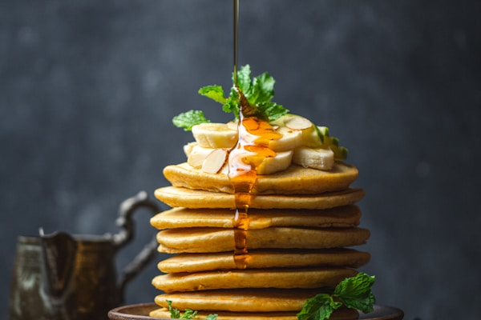
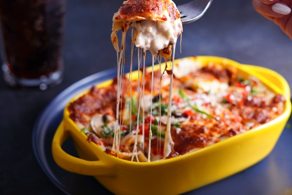
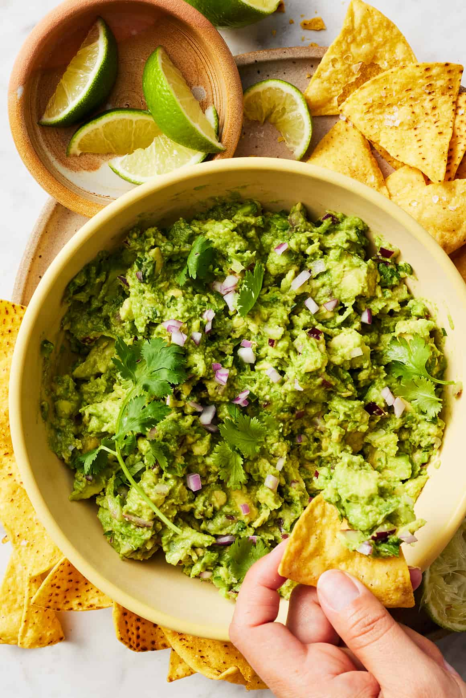

20 min
20 min
Creamy Garlic Pasta
Rich and creamy pasta with fresh garlic and parmesan.

5 minEasy Pancakes
Light, fluffy pancakes perfect for a quick and delicious breakfast.
 10 min
10 min
Lemon Garlic Shrimp
A light and zesty pasta dish with shrimp, lemon, and garlic.
 10 min
10 min
Caprese Salad
A fresh Italian salad made with tomatoes, mozzarella, and basil.
 10 min
10 min
One-Pot Chicken and Rice
A one-pot meal that's savory, hearty, and easy to make.

15 minCheesy Baked Ziti
A comforting, cheesy baked pasta dish with a rich tomato sauce.
 10 min
10 min
Vegetable Stir Fry
A quick, colorful stir fry loaded with fresh vegetables in a savory sauce.

3 minHomemade Guacamole
A fresh and easy guacamole recipe made with ripe avocados.
 60 min
60 min
Chocolate Chip Cookies
Classic, soft, and chewy chocolate chip cookies with crispy edges.